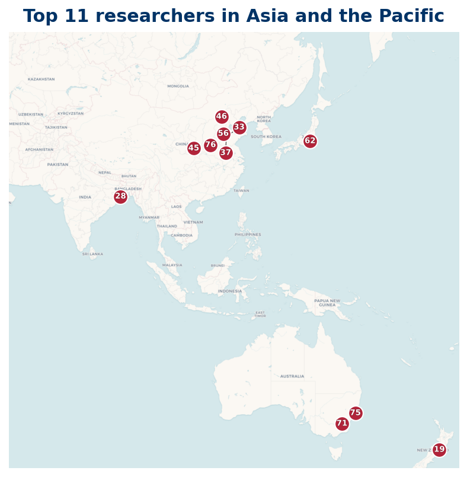

Listing
| Rank | Name | Institution | Country |
|---|---|---|---|
| 1 | Igor E. Shparlinski | UNSW Sydney | AU |
| 6 | XingMing Lⅰu | Lanzhou University of Technology | CN |
| 12 | Jiexing Li | China University of Mining and Technology (Beijing) | CN |
| 13 | Cai, Yingchun | Jiangsu Academy of Agricultural Sciences | CN |
| 21 | Jie Wu | Hunan Agricultural Products (China) | CN |
| 22 | Jiseong Kim | Sogang University | KR |
| 23 | Ruqing Chen | National Cheng Kung University | TW |
| 40 | Zhurong Zhou | Southwest University | CN |
| 42 | Tsz Ho Chan | Pok Oi Hospital | HK |
| 43 | Jia, Chaohua | Academy of Mathematics and Systems Science, Chinese Academy of Sciences | CN |
| 47 | shifa liu | Peking University | CN |
| 50 | fadong zhang | Tsinghua University | CN |
| 52 | Matt Visser | Victoria University of Wellington | NZ |
| 59 | Xiang Zhang | Shaoxing University | CN |
| 61 | Stephan Baier | Ramakrishna Mission Vivekananda Educational and Research Institute | IN |
| 62 | Adrian W. Dudek | The University of Queensland | AU |
| 76 | Bingrong Huang | State Key Laboratory of Cryptology | CN |
| 89 | Hongmei Li | Sichuan University | CN |
| 93 | Yu-Chen Sun | East China Jiaotong University | CN |